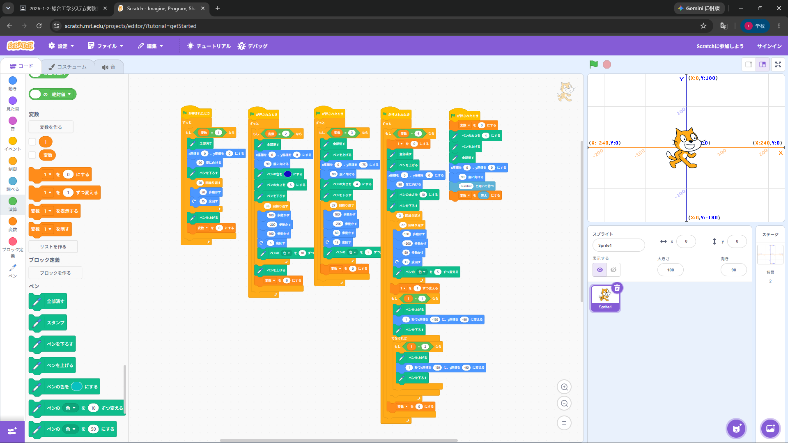
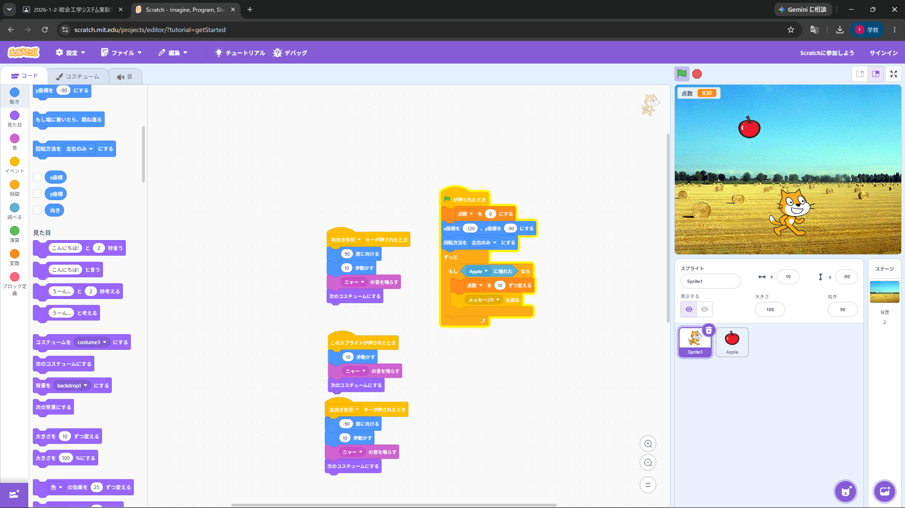

1週目のレポート ： 公大高専１年実習I-1
2a班12番 ニック
第1週目
1-1 サイエンスアート

1.内容
Scratchとその拡張機能を使い、サイエンスアートというものした。ブロック型のプログラムを組み立て数字を入力することで幾何学的な模様を描くことができた。数字を変えるだけでいろいろな模様を描くことができた。。
2.感想
スクラッチはビジュアルプログラミングなのにもかかわらず拡張性が高く驚いた。ブロックを組み立て数字を変えるだけでもたくさんのものが作ることができて面白かった。
1-2 ゲーム

1.内容
Scratchを使って、猫を移動させリンゴをとるゲームを作った。ジャンプした時の重力を変数で表すなど、変数や関数を使うことでより楽しみやすいゲームを作ることできた。
2.感想
スクラッチはプログラミング言語を打たず、ブロックを組み立てるだけでいいのに、ここまで様々なゲームを作れるのはすごいと感じた。特にクラウド変数を使うことでオンラインゲームも作ることができるのがいいと感じた。
1-3 ホームページ作成
私のホームページ
1.内容
学習した内容を説明する文章を
Githubを使ってhomeoage作成に取り組んだ。ほかの人のプログラムをもとにして作る方法、プログラムの保存の仕方など様々な使い方を知ることができた。
ホームページのプログラムについて少し触れることができた。
2.感想
表示する文字だけではなくHTMLの書き方についてもう少し学んでみたいと感じた。
GithubはプログラムのSNSのようなもので必要不可欠な仕組みだと知ることができた。
各ページへのリンク
1週目のレポート
2週目のレポート
3週目のレポート
私のホームページ